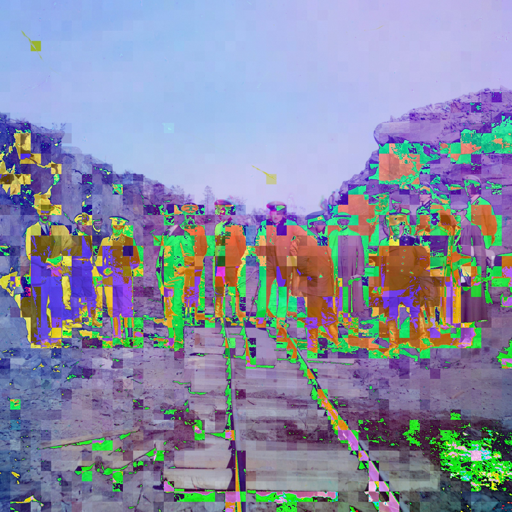
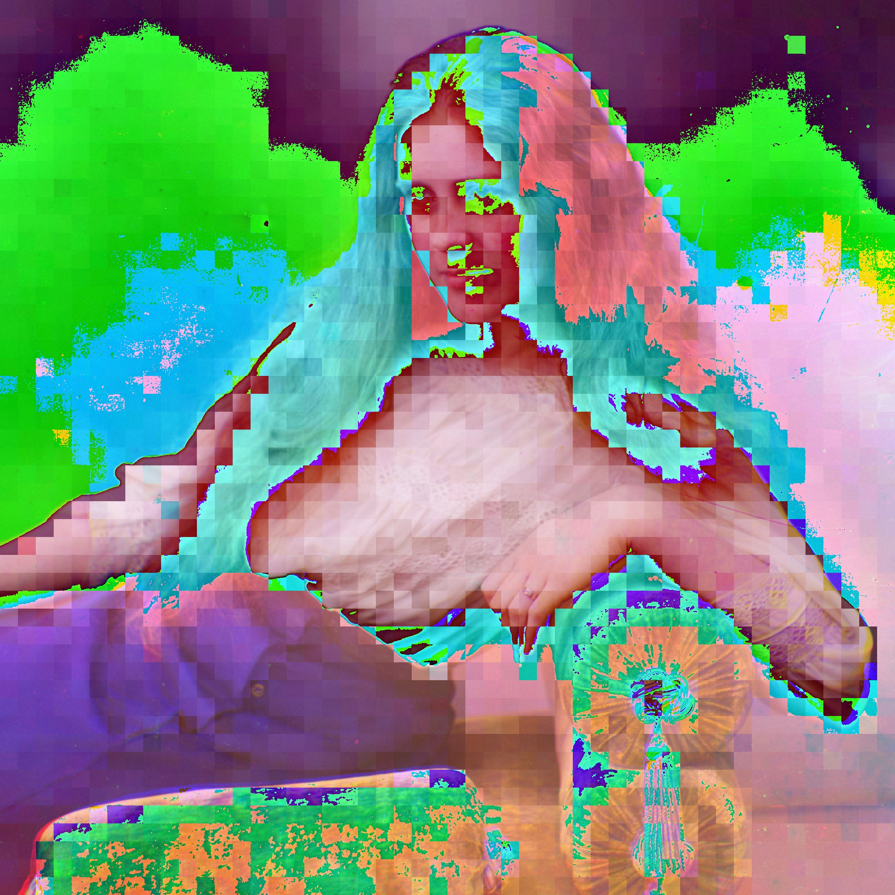
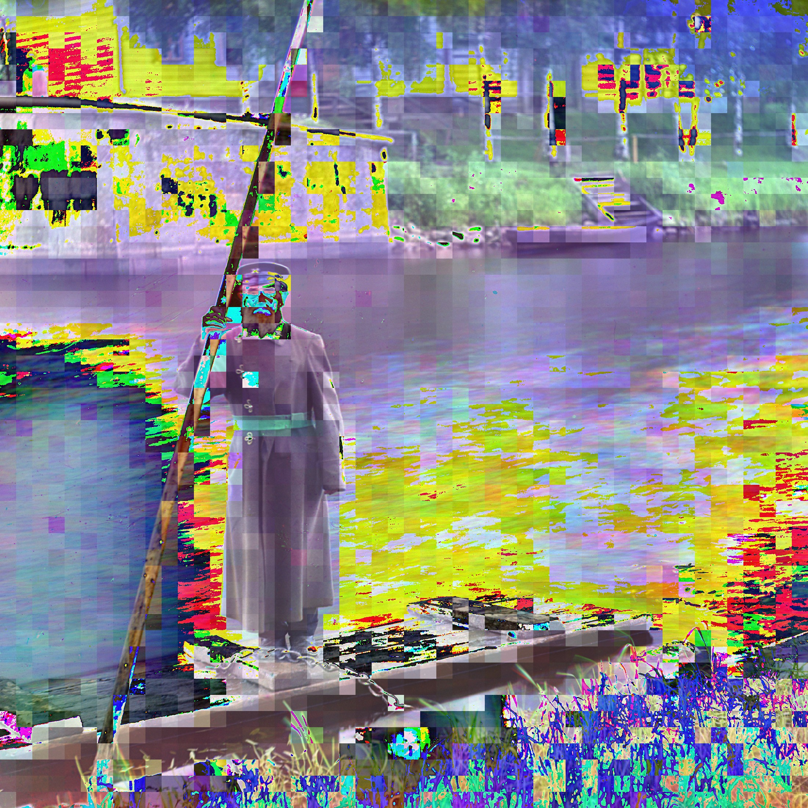

After Prokudin-Gorsky
After Prokudin-Gorsky is a body of work derived from the images tagged as being portraits by the Library of Cogress in their digital collection of images taken by early color photographer Sergei Prokudin-Gorsky.

After Prokudin-Gorsky 1, 2016. JPEG image. Variable dimensions, 1:1 aspect ratio.

After Prokudin-Gorsky 2, 2016. JPEG image. Variable dimensions, 1:1 aspect ratio.

After Prokudin-Gorsky 3, 2016. JPEG image. Variable dimensions, 1:1 aspect ratio.

After Prokudin-Gorsky 4, 2016. JPEG image. Variable dimensions, 1:1 aspect ratio.
Instagram - eMail - Retro Site
copyright Alan Perry 2022